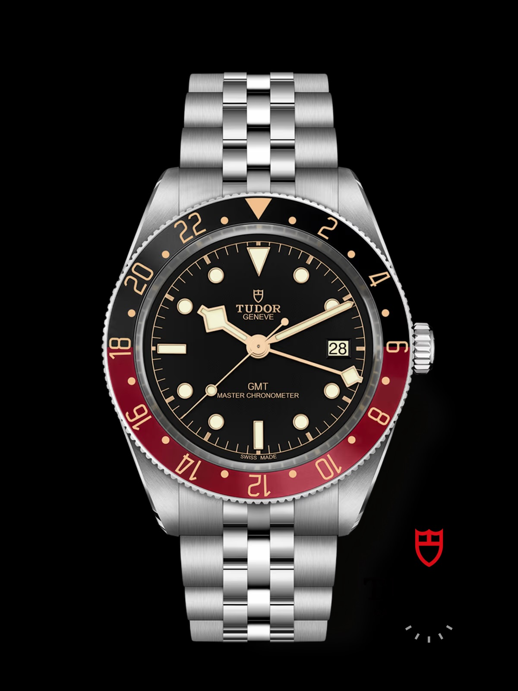
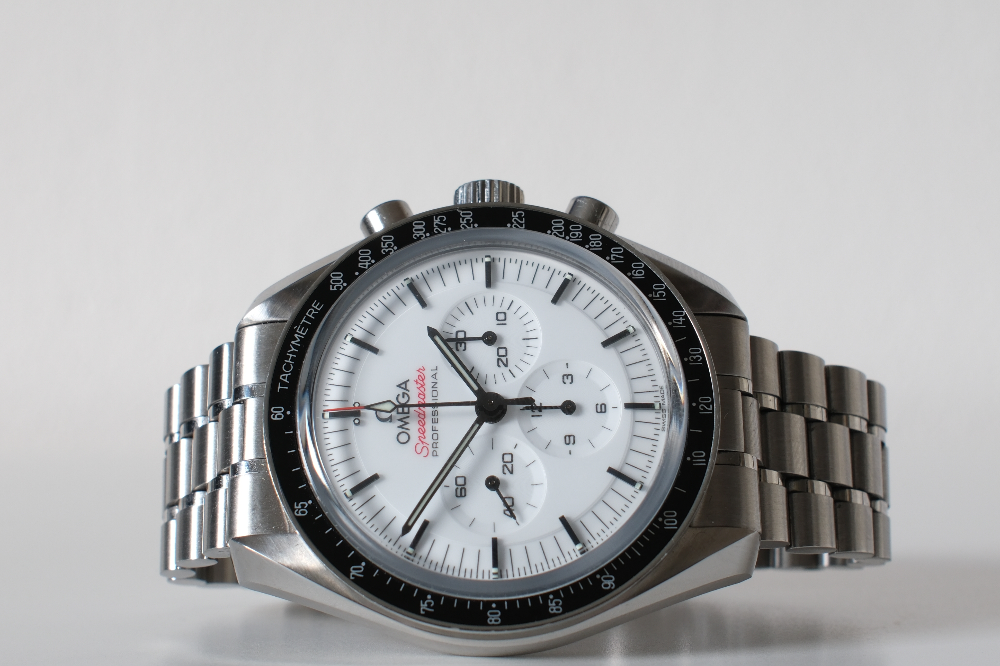
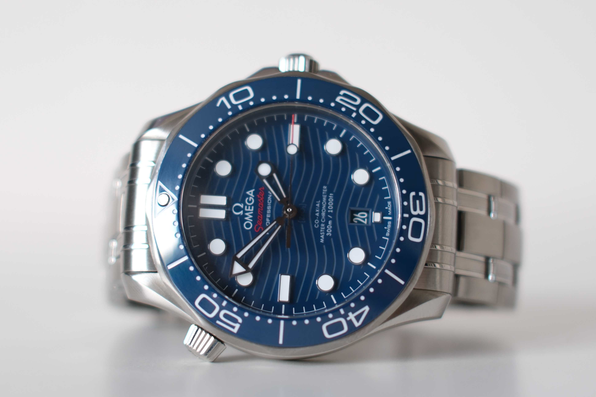

Find et lignende
Leder du efter et lignende?
Fortæl os hvad der betyder noget for dig — reference, årstal eller skive — så giver vi besked når vi finder et.
Mere fra All in Time
Du synes måske også om

Speedmaster Moonwatch
DKK 49.500
En ikonisk Omega Speedmaster Moonwatch Professional med elegant hvidlakeret skive, sorte kontrastdetaljer og klassisk stålkonstruktion. Modellen viderefører det legendariske Moonwatch-design, der har været en del af Omegas historie inden for rumfart, og kombinerer vintage-inspirerede detaljer med det moderne Co-Axial Master Chronometer-kaliber 3861. Et tidløst og karakterfuldt ur, der forener historisk arv, teknisk præcision og et raffineret udtryk.

Seamaster Diver 300M
DKK 28.900
En moderne Omega Seamaster Diver 300M med blå keramisk bølgeskive, matchende dykkerkrans med hvid emaljeskala og klassisk stålkonstruktion. Modellen har en 42 mm urkasse, rhodiumbelagte visere og timemarkeringer samt 300 meters vandtæthed. Uret drives af Omegas Co-Axial Master Chronometer-kaliber 8800, synligt gennem safirglasset i bagkassen. En sporty og gennemført Seamaster, der forener kollektionens maritime arv med moderne materialer og teknisk præcision.